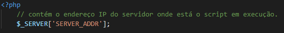
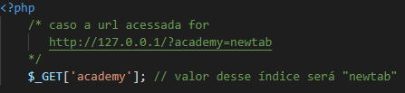

O interpretador PHP fornece de forma automática algumas variáveis predefinidas (nativas) que podem ser acessadas de qualquer parte do seu código, e por esse motivo também são consideradas super globais.
Com esse tipo de variável, é possível recuperar dados de formulários, sessões, cookies, servidores. Veremos algumas a seguir:
É um array que armazena informações fornecidas pelo servidor. Você poderá encontrar outros valores aqui
É um array que recupera dados enviados pela url através do método http GET. Veremos mais detalhes sobre a utilização dessa variável posteriormente:
É um array que recupera informações enviadas pelo usuário através de um formulário, utilizando o método http POST. Veremos mais detalhes da utilização dessa variável no conteúdo sobre formulários 😉
É um array que contém informações sobre arquivos enviados pelo usuário através de um formulário utilizando o método http POST. Vamos aprofundar nosso conhecimento nessa variável no conteúdo sobre formulários ;).